User Interface (UI) [Package]
The UI package serves as the foundation for the application's front-end architecture. It contains all the essential elements and layers needed to construct the user interface, ensuring seamless interaction and navigation.
Structure
The UI package is organized into the following sub-packages:
Components: This package contains reusable UI elements that can be shared across multiple screens, such as buttons, dialogs, and custom widgets.
Navigation: Defines the app's navigation structure, including navigation graphs and routing logic for transitioning between screens.
Screens: Holds the main UI screens of the app, categorized into sub-packages based on their functionality.
Theme: Manages the visual styling of the app, including colors, typography, and shapes, using Material Design principles.
Viewmodels: Contains the logic that connects the UI to the application's underlying data and business logic, adhering to the MVVM architectural pattern.
Navigation Flow Chart
The navigation flow chart describes the navigation flow of all the screens. It contains all the screens and they are linked based on the possible path between screens. It also notes when a screen has an animation

Folder Tree
\VOCIAPP\APP\SRC\MAIN\JAVA\COM\EXAMPLE\VOCIAPP\UI
├───components
│ ├───core
│ │ BottomBar.kt
│ │ CustomChip.kt
│ │ CustomFAB.kt
│ │ DrawerContent.kt
│ │ HapticModifier.kt
│ │ NavigationLink.kt
│ │ Screens.kt
│ │ SearchBar.kt
│ │ StatusLED.kt
│ │
│ ├───homeless
│ │ AddHomelessDialog.kt
│ │ GenderSelector.kt
│ │ HomelessDialogList.kt
│ │ HomelessList.kt
│ │ HomelessListItem.kt
│ │
│ ├───maps
│ │ MapOnDevice.kt
│ │ MultiPointMap.kt
│ │
│ ├───requests
│ │ AddRequestDialog.kt
│ │ DialogSearchBar.kt
│ │ IconMapping.kt
│ │ IconSelector.kt
│ │ ModifyRequestDialog.kt
│ │ RequestList.kt
│ │ RequestListItem.kt
│ │ SortButtons.kt
│ │
│ ├───updates
│ │ ButtonOption.kt
│ │ FormText.kt
│ │ StatusButtonData.kt
│ │ UpdateButton.kt
│ │
│ └───volunteers
│ AuthTextField.kt
│ ProfileInfoItem.kt
│
├───navigation
│ NavGraph.kt
│
├───screens
│ │ ApiTesting.kt
│ │
│ ├───auth
│ │ SignInScreen.kt
│ │ SignUpScreen.kt
│ │
│ ├───home
│ │ HomeScreen.kt
│ │
│ ├───maps
│ │ HomelessesMap.kt
│ │
│ ├───profiles
│ │ ├───homeless
│ │ │ ProfileHomeless.kt
│ │ │
│ │ ├───userProfile
│ │ │ UpdateUserProfileScreen.kt
│ │ │ UserProfileScreen.kt
│ │ │
│ │ └───volunteer
│ │ ProfileVolunteerScreen.kt
│ │
│ ├───requests
│ │ RequestDetailsScreen.kt
│ │ RequestsHistoryScreen.kt
│ │ RequestsScreen.kt
│ │
│ └───updates
│ UpdateAddFormScreen.kt
│ UpdateAddScreen.kt
│ UpdateScreen.kt
│
├───state
│ HomelessItemUiState.kt
│ SortOption.kt
│
├───theme
│ Color.kt
│ Theme.kt
│ Type.kt
│
└───viewmodels
AuthViewModel.kt
HomelessViewModel.kt
RequestViewModel.kt
UpdatesViewModel.kt
VolunteerViewModel.kt
Last modified: 16 January 2025